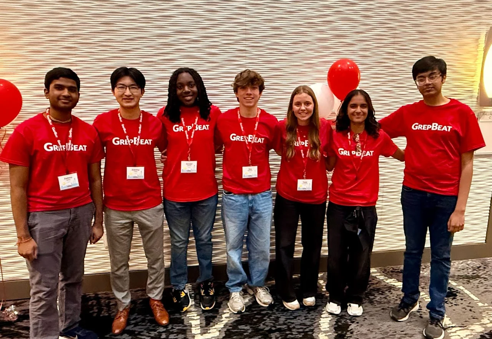

The Colopy Entrepreneurship Program at NCSSM
Established in 2024 through a gift from the Colopy family, the program helps students explore entrepreneurship through hands-on learning, mentorship, and support for their ideas.
It brings business principles together with creative problem-solving, helping students develop ventures that respond to real needs in their communities.

Take the next step.
Find funding for your idea
The program’s Grants & Resources page explains Accelerator Grants and shares a funding toolkit. Check the program’s current process and eligibility before applying.
Explore grants & resources ↗Learn with people who’ve done it
Explore educational programming and mentorship to develop your idea beyond its first prototype.
Meet the program ↗Talk through your next move
For questions about the program, mentorship, or funding, contact entrepreneurship@ncssm.edu.
Ideas out in the world.
Presentations, conversations, and celebrations from the program.


Select a photo to view it in full. Photos carried over from the previous Entrepreneurship in NC page.